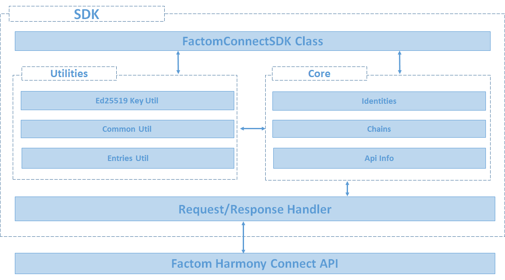

Introduction¶
About SDK Architecture Overview
Note
This is sample documentation.
About¶
This documentation is written for developers with a basic level of coding knowledge and familiarity of the Python programming language. Readers can find guidelines to quickly get started with building and using the Python SDK for Factom Harmony Connect. You can learn more about Factom Harmony Connect here. This SDK is open source and can be accessed on Github here.
SDK Architecture Overview¶
FactomSDK Class: Manages SDK constructor, product connection and provides access to other layers.
Utilities: Contain functions shared between core components.
Core: Contains main components that interact with Connect API.
Request/Response Handler: Handles all requests/responses (HTTP / HTTPS) from Connect API before passing them to other components.